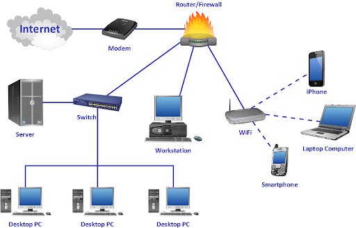
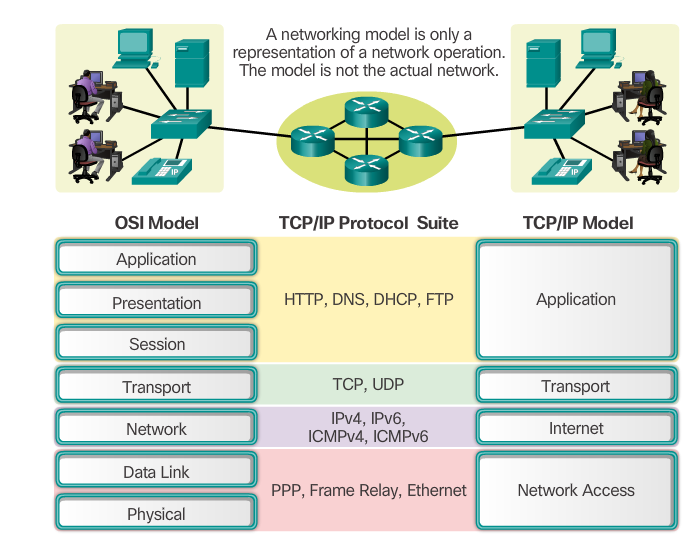
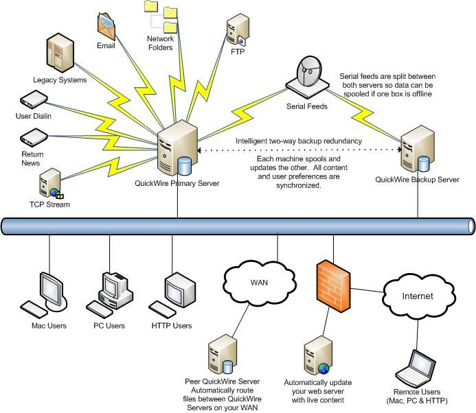

Layer 5 (Application)
Layer 4 (Transport)
Layer 3 (Network)
Layer 2
(Link)
Layer 1 (physical)

| Defination | Importance | Example | Key Components | View |
|---|---|---|---|---|
| In the simplest sense, networking means connecting computers so that they can share files, printers, applications, and other computer-related resources. and other devices connected in some ways so as to be able to exchange data. | Why is networking important? Networking allows you access to opportunities you might not be able to find on your own. Your network has the potential to provide you with insight into different fields, information on what potential employers look for and advice on how you can improve professionally. | An example of networking is sharing and acquiring information between different divisions of the same company to share information and solve business problems. An example of networking is linking the entire network of computers to a print server to allow each workstation to have the ability to print documents. |
Cables, Modem, Switch, Server, Router, WiFi, LAN, WAN. |
 |
| Defination | Importance | Example | Key Components | View |
|---|---|---|---|---|
| A network protocol is an established set of rules that determine how data is transmitted between different devices in the same network. Essentially, it allows connected devices to communicate with each other, regardless of any differences in their internal processes, structure or design. Network protocols are the reason you can easily communicate with people all over the world, and thus play a critical role in modern digital communications. | Communication protocols allow different network devices to communicate with each other. They are used in both analog and digital communications and can be used for important processes, ranging from transferring files between devices to accessing the internet. | A protocol is a standard set of rules that allow electronic devices to communicate with each other. These rules include what type of data may be transmitted, what commands are used to send and receive data, and how data transfers are confirmed. |
HTTP, FTP, SMTP, DNS, IP, IPX, SPX |
 |
| Defination | Importance | Example | Key Components | View |
|---|---|---|---|---|
| Most network protocol suites are structured as a series of layers, sometimes referred to collectively as a protocol stack. Each layer is designed for a specific purpose. Each layer exists on both the sending and receiving hosts. ... Effectively, each layer on a host acts independently of other layers on the same machine. | Protocol Layers. The communication between the nodes in a packet data network must be precisely defined to ensure correct interpretation of the packets by the receiving intermediate and the end systems. ... The protocols are usually structured together to form a layered design (also known as a "protocol stack"). | For example, two instances of TCP talk with each other by exchanging IP packets. A correct TCP implementation should never interact directly with the device driver for the Ethernet card. The chunks of information exchanged are called protocol data units. |
"Stack" Layer 5 (Application) Layer 4 (Transport) Layer 3 (Network) Layer 2 (Link) Layer 1 (physical) |
|
| Defination | Importance | Example | Key Components | View |
|---|---|---|---|---|
| First implemented in the Defense Advanced Research Project Agency Network (Arpanet), in 1966 in USA. Consists of connecting several computer networks based on different protocols Requires the definition of a common interconnection protocol on top the local protocols.The Internet Protocol (IP) plays this role, by defining unique addresses for a network and a host machine. | Interconnection is important both as a consumer issue and for securing fair competition. Interconnection of networks is necessary in order to ensure that all users can communicate with each other or connect to all the services they demand. | Dynamic interconnection networks are connections between processing nodes and memory nodes that are usually connected through switching element nodes. ... Examples of dynamic interconnection networks are bus, crossbar, and multistage. |
Direct connection networks, Indirect connection networks Bus networks Multistage networks Crossbar switches |
 |
| iPad Pro | Surface Pro 6 |
|---|---|
| User Reviews 4.8 ⭐ ⭐ ⭐ ⭐ ✨ | User Reviews 4.6 ⭐ ⭐ ⭐ ⭐ ✨ |
| Editorial rating 4.5/5 | Editorial rating 4/5 |
| Price $ 1399 plus tax | Price $ 999 plus tax |
| Storage 128 GB, 256 GB, 512 GB, 1 TB | Storage 8 GB, 16 GB, 64 GB, 128 GB, 256 GB, 512 GB, 1 TB |
| Weight & DIM 22.6 ounces 11 x 8.5 x 0.23 inches | Weight & DIM 27.2 ounces 11.5 x 7.9 x 0.33 inches |
| Operating System Apple | Operating System Microsoft |
| Display 12.9-inch Retina display, 2,732x2,048 resolution (264 ppi) | Display 12.3-inch PixelSense display, 2,736x1,824 resolution (267 ppi) |
| Camera Front: 7MP with Portrait mode and Portrait Lighting, rear: 12MP | Camera Front: 5-megapixel with support for Windows Hello, rear: 8-megapixel |
| Connectivity 4G, Wi-Fi Only | Connectivity 4G, Wi-Fi Only |
| Battery 10 Hours | Battery 14 Hours |
| Keyboard & Stylus $199(Keyboard) $129(Stylus) | Keyboard & Stylus $129(Keyboard) $99(Stylus) |
A computer network is group of computers connected to each other through one server.
Internet gives you a power to use web. Just like you need an electricity on turn on the bulb.
Internet runs in fiber-optical wire or wireless you can’t see it but you can
definitely feel it,
Internet allows you to get any information or to get connect with anyone in seconds.
Internet service providers, allows us to use internet service provided by them with some cost.
Internet was created for military purposes but later it was the only way to connect
and communicate
the world in seconds, it was created in 1960s.
Domain name system locates and translates domain names into ip addresses, DNS is
very important
without DNS multiple people cant visit the same website at a same time.
Internet has changed alot past 10 years, we only used to have internet only on PC
now we can use
internet on any device that has an wifi option, now we have free internet anywhere we go on an easy
access.
When we key in digits on a calculator keypad
Process the binary numbers into decimal numbers
A small memory chip that can only save 10 digits at a time
ALU does all the hard work like calculating answers for us
Screen shows us the answers we are looking for